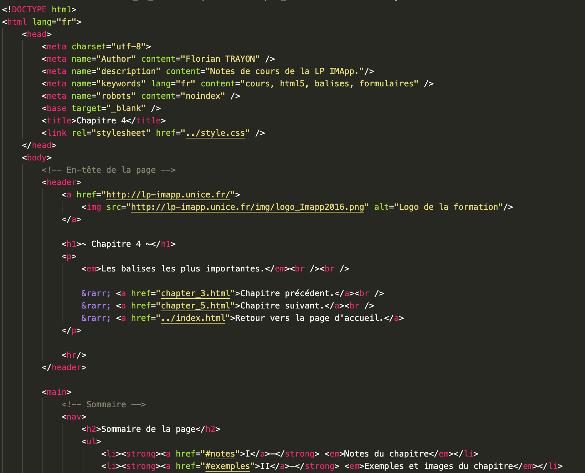
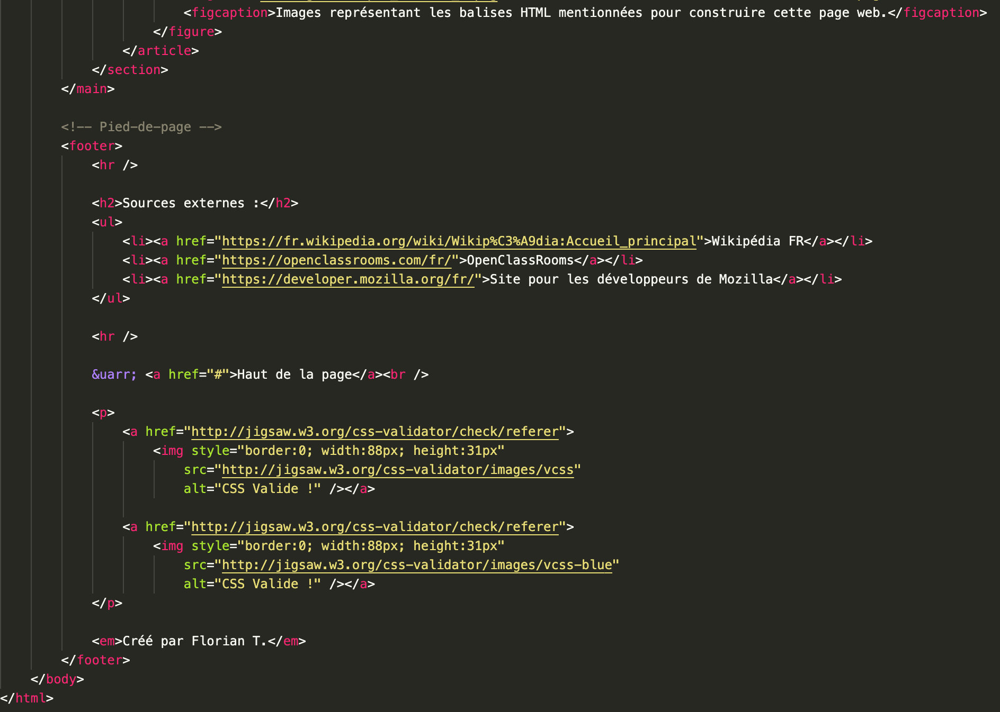

La balise <head> fournit des informations générales sur le document,
incluant son titre et des liens ou des définitions vers des scripts
(JavaScript)
et feuilles de style (CSS).
La balise <link> définit la relation entre le document actuelle
et une ressource externe. Cet élément peut être utilisé pour définir un lien vers une feuille de style,
vers les icônes utilisées en barre de titre ou comme icône d'application sur les appareils mobiles.
La balise <meta> représente toute information de métadonnées, comme par exemple
l'encodage du site, qui ne peut pas être représentée par un des éléments (base, link, script, style ou title).
La balise <style> contient des informations de mise en forme pour un document
ou une partie d'un document. Par défaut, les instructions de mise en forme écrites dans cet élément sont écrites en CSS.
La balise <title> définit le titre du document
(qui est affiché dans la barre de titre du navigateur ou dans l'onglet de la page).
Cet élément ne peut contenir que du texte, les balises qu'il contiendrait seraient ignorées.
La balise <body> représente le contenu principal du document HTML.
Il ne peut y avoir qu'un élément par document.
La balise <article> représente une composition autonome dans un document,
une page, une application ou un site, destinée à être distribuée ou réutilisée de manière indépendante.
Exemples : un message de forum, un article de magazine ou de journal, ou un article de blog, une fiche produit,
un commentaire soumis par un utilisateur, un widget ou gadget interactif, ou tout autre élément de contenu indépendant.
La balise <footer> représente le pied de page de la section ou de la racine de sectionnement
la plus proche. Cet élément contient habituellement des informations sur l'autrice ou l'auteur de la section,
les données relatives au droit d'auteur (copyright)
ou les liens vers d'autres documents en relation.
La balise <header> représente un groupe de contenu introductif ou de contenu
aidant à la navigation. Il peut contenir des éléments de titre, mais aussi d'autres éléments tels qu'un logo,
un formulaire de recherche, etc.
Les balises <h1> à <h6> représentent six niveaux de titres dans un document,
<h1> est le plus important et <h6> est le moins important.
Un élément de titre décrit brièvement le sujet de la section qu'il introduit.
La balise <main> représente le contenu majoritaire du corps (body) du document.
Le contenu principal de la zone est constitué de contenu directement en relation,
ou qui étend le sujet principal du document ou de la fonctionnalité principale d'une application.
La balise <nav> représente une section d'une page ayant des liens vers d'autres pages
ou des fragments de cette page. Autrement dit, c'est une section destinée à la navigation dans un document
(avec des menus, des tables des matières, des index, etc.).
La balise <section> représente une section générique d'un document,
par exemple un groupe de contenu thématique. Une section commence généralement avec un titre.
La balise <pre> représente du texte préformaté, généralement écrit
avec une police à chasse fixe. Le texte est affiché tel quel, les espaces utilisés dans le document HTML seront retranscrits.
La balise <code> représente représente un fragment de code informatique.
Par défaut, cette balise utilise une police à chasse fixe afin d'afficher le texte contenu dans cet élément.
La balise <img> intègre une image quelconque dans le document.
L'image peut venir d'une source interne du site Web ou d'un site externe comme une image Google.
La balise <textarea> représente un champ de saisie qui permet d'éditer du texte sur plusieurs lignes.
La balise <audio> utilisé afin d'intégrer un contenu sonore dans un document.
Il peut contenir une ou plusieurs sources audio représentées avec l'attribut src ou l'élément <source>.
La balise <video> intègre un contenu vidéo dans un document.
Le chemin vers le média à afficher est fourni via l'attribut src et on peut inclure d'autres attributs afin de spécifier la largeur et la hauteur,
la lecture automatique et/ou en boucle, les contrôles de lecture affichés, etc.
Pour essayez, vous pouvez copier/coller ce code pour expérimenter certaines balises mentionnées ci-dessus.
<!-- On signale que notre document utilise HTML 5 -->
<!DOCTYPE html>
<!-- On utilise la balise "html" pour commencer la structuration en précisant la langue du contenu -->
<html lang="fr">
<!-- DÉBUT DE L'EN-TÊTE DU DOCUMENT >
<head>
<!-- Le document est encodé en UTF-8 -->
<meta charset="utf-8">
<!-- Le document a été créé par "Prénom Nom" -->
<meta name="Author" content="Prénom NOM />
<!-- La description du document actuel. -->
<meta name="description" content="La description du document actuel."/>
<!-- Les mots-clés liés au contenu du document actuel. -->
<meta name="keywords" lang="fr" content="html, code, ..." />
<!-- Le type de contrôle de l'indexation des pages (actuellement bloqué) -->
<meta name="robots" content="noindex" />
<!-- Le titre du document HTML -->
<title>Titre de la page</title>
<!-- Le document HTML nécessite une feuille de style CSS -->
<link rel="stylesheet" href="style.css" />
<!-- Le document nécessite l'exécution de scripts client JS -->
<script src="script.js" />
<!-- FIN DE L'EN-TÊTE DU DOCUMENT -->
</head>
<!-- DÉBUT DU CORPS DU DOCUMENT -->
<body>
<!-- Cette balise sert essentiellement a présenter le contenu de la page actuelle -->
<header>
<h1>En-tête de la page</h1>
Cette page va traiter de ...
</header>
<!-- Cette balise va contenir les informations les plus importantes du document -->
<main>
<!-- Barre de navigation du document, on peut y mettre des boutons de redirection par exemple -->
<nav>
<h1>Barre de navigation</h1>
Boutons vers les différentes pages du sites...
</nav>
<!-- Ceci est la première section du document, on peut par exemple parler de la relation client/serveur -->
<section>
<h2>Première section</h2>
<!-- Le premier article peut par exemple parler de la conception de client... -->
<article>
<h3>Premier titre du premier article</h3>
Description de l'article...
</article>
<!-- ... et le deuxième celui du serveur -->
<article>
<h3>Deuxième titre du premier article</h3>
Description de l'article...
</article>
</section>
<!-- La deuxième section peut elle aborder un autre sujet comme les balises HTML -->
<section>
<h2>Deuxième section</h2>
<article>
<h3>Premier titre du deuxième article</h3>
Description de l'article...
</article>
</section>
<!-- Le pied de page regroupe toutes (ou la plupart) des informations concernant le site et/ou le document -->
<footer>
<h1>Pied de page</h1>
Quelques informations sur les contacts, etc...
</footer>
</main>
<!-- FIN DU CORPS DU DOCUMENT -->
</body>
<!-- On clos la balise "html" pour signaler que la structure est terminé -->
</html>


Images représentant les balises HTML mentionnées pour construire cette page web.